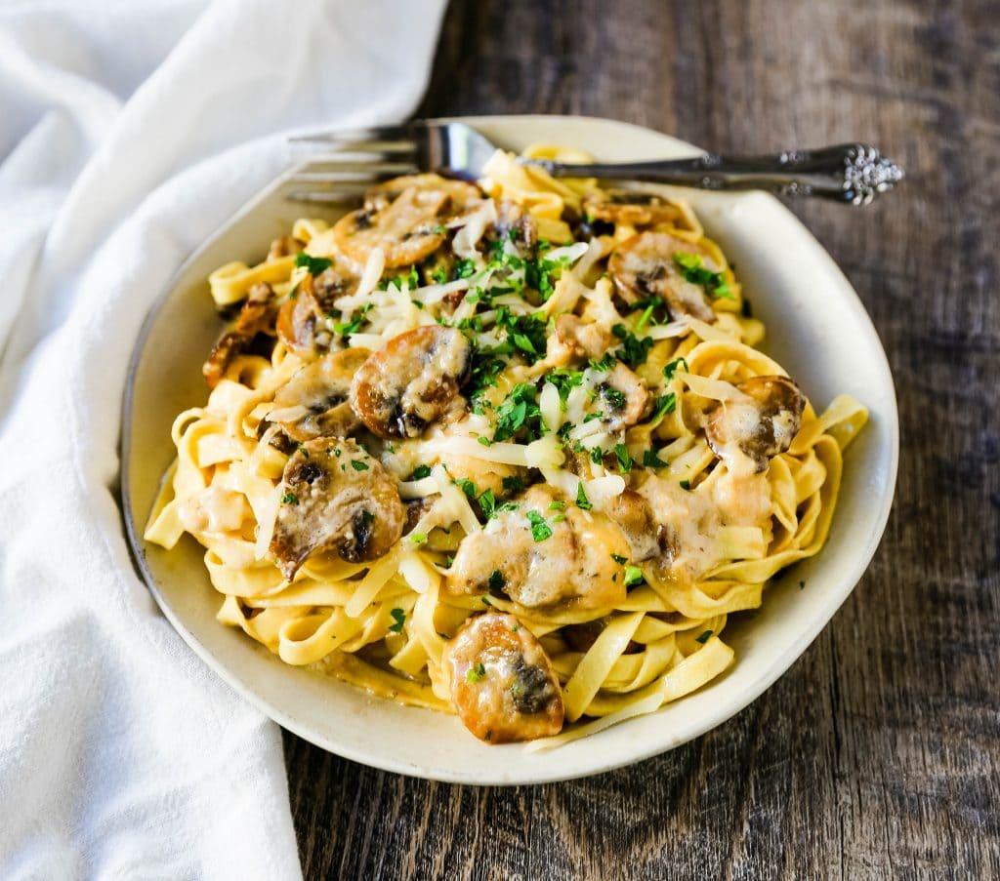

Home
Mushroom Fettuccine Alfredo

Description
This dish right here...o'my! This dish is probably one of my favorites!...and I don't even like mushrooms!
This dish is packed full of yummy garlic and parmesan flavor and the garnished Parsely adds
a little something extra! A winner in my home every time!
Ingredients
- 6 tbsps salted butter, divided
- 16 oz white mushrooms, sliced
- 3 garlic cloves, minced and divided
- 1 1/2 cups heavy cream
- 1 1/4 cups good quality grated parmesan cheese
- 1/4 tsp pepper
- 1 lb fettuccine noodles
- salted pasta water, to thin out sauce, optional
- fresh parsely or basis, chopped, optional
Steps
- In a large skillet, heat 2 Tablespoons of salted butter over medium-high heat. Add sliced mushrooms and cook for 10-12 minutes or until golden and caramelized. Add 2 cloves of garlic and cook for 1-2 minutes longer. Remove from pan and set aside.
- After mushrooms have been removed from the skillet, add the remaining 4 Tablespoons of butter and 1 remaining garlic clove to the skillet. Cook for 1 minute. Add heavy cream. Let cook over medium heat for 6 to 8 minutes, until it begins to reduce and thicken.
- While the sauce is thickening, bring water to boil in a large pot. Generously salt the water. Add fettuccine and cook according to package instructions.
- Add ONLY half of the parmesan cheese at a time and whisk to completely combine before adding more cheese. If you add all of the cheese at once, the sauce may become clumpy. Stir in pepper. Add salt if needed. If you want a thinner sauce, add some salted pasta water to the sauce.
- Toss the mushrooms into the sauce or reserve to place on the top of the pasta. Toss the cooked fettuccine into the alfredo sauce. Top with fresh parsley or basil, if so desired.